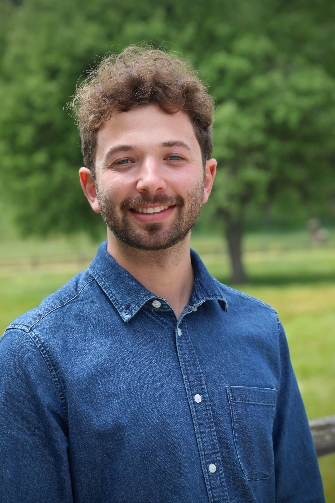

I'm a solutions engineer in wildfire risk modeling, based in San Diego. I build custom tools for sales, contribute to model development, support customer success, and lead client projects.
I have an M.S. in Geography (GIScience and Remote Sensing) from San Diego State University and a B.S. in Conservation Biology with a minor in GIS from UC Davis. View my thesis here.
Beyond wildfire, I'm interested in transit mapping, routing, and travel demand modeling. I enjoy contributing to open-source software, and I'm a hobbyist photographer who mostly shoots landscapes and wildlife.